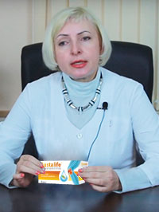

"На сегодняшний день - это самый эффективный способ лечения суставов и проблем с позвоночником. Аналогов нет!"
На фото: Профессор Пак получает Нобелевскую премию за открытие, которое позволило достичь прорыва в лечении опорно-двигательного аппарата.
Вести: Профессор, здравствуйте! Мы рады Вас видеть! Скажите, на самом деле в Китае есть какой-то секрет по лечению болезней суставов?
Профессор Пак: Здравствуйте! В России проблема с суставами стоит очень остро: у каждого 4-го жителя есть боли в спине, локтях, коленях, грыжа или артрит в той или иной стадии. Я сочувствую вам, потому что знаю, как страшны болезни суставов и чем они могут закончиться для человека. В Китае мы с этой болезнью давно справились, поэтому я с удовольствием поделюсь опытом нашей страны.
Вести: В чем секрет китайского здоровья и долголетия? В еде?
Профессор Пак: Это миф, морепродукты по карману не каждому, поэтому основное блюдо в нашем рационе - обычный рис. Наш секрет в наследии предков, знаменитой китайской медицине. Человеческий организм - это тонкий инструмент, и вы даже не представляете, как хорошо его можно настроить!
Вести: Во многих странах считают, что больные суставы - естественный признак старости?
Профессор Пак: Мы, в Китае, доказали, что суставы способны полностью восстанавливаться, ИХ МОЖНО И НУЖНО ЛЕЧИТЬ. Основная проблема болезни - износ. На суставы постоянно идет большая нагрузка, поэтому хрящевая ткань теряет эластичность, истончается и стирается. Отсюда щелчки, боли, новообразования (грыжи) и деформация кости (артроз). Уже к 60-ти годам у многих хрящ стирается на 45-50%. Как восстановить то, чего уже нет? Можно ли буквально “нарастить” сустав? Можно!
Вести: И как же это сделать?
Профессор Пак: Наше тело имеет уникальную способность к регенерации. Посмотрите, как быстро заживает порез на вашей коже. Так же может восстанавливаться любая ткань и внутри организма. Вопрос в скорости и активности процесса: один орган восстанавливается сам, а другому нужно помочь. Задействуйте скрытые ресурсы своего тела, и вы почувствуете себя таким здоровым, как никогда раньше!
Вести: Вот мы как раз об этом мы хотим услышать подробнее.
Профессор Пак: Рецепт восстановления суставов в Тибете известен уже 2 000 лет. Это смесь натуральных компонентов, которая активирует деление и рост хрящевых клеток. Сначала средство использовалось только для наружного применения, им пропитывали повязки и накладывали на больные места. Но потом мы поняли, что лечение более эффективно при приеме внутрь. Благодаря нашим научным достижениям, сегодня тибетский рецепт доступен во всем мире в виде капсул. Я принимал участие в его разработке, поэтому знаю все о его составе и действии.
Принцип простой: лекарственный состав капсул напрямую впитывается в хрящевую ткань практически моментально. Боль исчезает практически сразу, а полностью сустав восстанавливается, примерно, через 1-2 месяца. Вдумайтесь только - полное восстановление сустава. Возможность избежать операции абсолютно реальна!
Вести: Как выглядит процесс восстановления?
Профессор Пак: Доказано, что клетки, отвечающие за здоровье и рост хрящевой ткани, находятся в ней самой. Компоненты, входящие в состав капсул, не просто снимают отек, боль и воспаление, но напрямую действуют на эти клетки и активируют их деление. Другими словами, это средство запускает дремлющий механизм, и заставляет его работать быстрее. Капсулы усиливают кровообращение в прилегающих тканях, что ведет к воспроизводству жидкости в суставной сумке. Это увеличивает подвижность самого сустава и позволяет хрящевой ткани нарастать быстрее. Что касается злокачественных новообразований (грыжа), то под воздействием препарата они постепенно размягчаются и выводятся из организма сначала через кровь, а потом и естественным путем, просачиваясь в кишечник.
Вести: Какие показания к применению капсул?
Профессор Пак: Средство показано при таких заболеваниях, как артрит, артроз, остеохондроз, ишиас, радикулит, межпозвоночная грыжа, смещение позвоночных дисков. Кроме того при болях, онемении конечностей, мышечных зажимах и надрывах, отеках, ушибах, травмах. Мы, в Китае, используем эти капсулы, в основном, для профилактики, поэтому и не болеем. Для нас он, как для вас чеснок, лук или чай с малиновым вареньем. Многие до сих пор по старинке делают средство сами, в домашних условиях, но не всегда удается верно подобрать ингредиенты или рассчитать их дозировку, а в готовом варианте конечно же таких проблем нет.
Вести: Где можно приобрести капсулы?
Профессор Пак: В России, к сожалению, нам не удалось пробиться на фармацевтический рынок. Нас просто не пустили, поэтому в аптеках и интернет-магазинах капсулы не продаются, их можно приобрести только на официальном сайте по цене 196 руб. Вы оформляете заказ оплачиваете посылку по факту получения. Ни в одной другой стране мира у нас таких проблем не было, да и в Китае эти капсулы есть в любой аптеке. Я понимаю, если люди будут здоровы, на чем тогда зарабатывать?
Вести: Мы благодарим профессора за такое интересное интервью, и по многочисленным просьбам телезрителей, публикуем ниже адрес официального сайта.
Учитывая огромный интерес к данному средству, мы выяснили, что же это за капсулы. Слово врачу реабилитологу-остеопату Е.А.Башлай:
"Как известно, китайская медицина отличается от традиционных видов лечения. Лечение в Китае – особый вид оздоровления организма. Китайские врачи находят причину болезни и воздействуют на нее без вреда для всего организма. Лечение травами - древнейший китайский способ лечения артроза, артрита и остеохондроза. Масштабные клинические исследования капсул «Sustalife» были проведены в Пекинском (Китай) и Стокгольмском (Швеция) медицинских университетах в еще 2016 году. Всего в них участвовало более 7000 мужчин и женщин с различными заболеваниями позвоночника и суставов, которые на протяжении 3-х недель использовали «Sustalife». Результаты исследований удивили даже врачей! Боли, как острые, так и ноющие, прошли у большинства испытуемых в течение 10 дней после начала использования капсул. У более чем 83% участвующих в исследованиях появились значительные сдвиги в лечении хронических заболеваний позвоночника и суставов. Положительное действие капсулы оказали на всех без исключения людей. Ни одно из существующих на сегодняшний день ортопедических средств не может похвастаться такой высокой эффективностью! Эффект от применения этого средства может сравниться только с операцией. Теперь действительно можно быстро восстановить суставы без операций. Исследования подтвердили - при ежедневном применении капсул в течение одного - двух месяцев хрящевая ткань восстанавливается! Немаловажно, что Sustalife в отличие от таблеток и мазей натуральный и безопасный для здоровья. |
До включительно проходит акция «Здоровые суставы»! До окончания акции оригинальные капсулы Sustalife можно заказать через официальный сайт по цене 196 руб! Именно до этого срока необходимо оставить заявку на сайте.
Перейти на официальный сайт
356 комментариев

Нина Харламова
Всегда терпела и думала что уже, никак не избавлюсь от болей в коленях. Это просто чудо! Пользуюсь уже три недели после вашей статьи! Прошли все боли и в ногах и в спине, начала уменьшаться холка! Пусть вашему порталу всегда сопутствует удача!
27.10.2017 в 14:46 Комментировать

Вероника Бачинская
Спасибо, капсулы очень быстро помогли! Заказывала за 196 руб. только на официальном сайте производителя! Не затягивайте с лечением, лучше избавится от этих проблем с суставами сейчас, чем потом слечь и понять что больше никогда не сможешь двигаться.
27.10.2017 в 15:44 Комментировать

Ярослав Лазарев
Слышал про капсулы в передаче про здоровье и сразу решил заказать, чтобы попробовать. Дело в том, что обычные лекарства мне помогали ненадолго — остеохондроз, как мне говорили, сложно вылечить. Теперь отписываюсь о результатах. Sustalife пришел очень быстро. Уже в первые 10 дней чувствую такое облегчение, что просто не мог не написать здесь об этом. Спасибо большое, теперь хоть смогу нормально жить!
28.10.2017 в 10:14 Комментировать
Мария Могот
Поддерживаю! Очень эффективное средство от проблем с суставами! Артроз колен как рукой сняло.
28.10.2017 в 13:55 Комментировать

Аня Сивкова
Это ж и моя радость, скорее даже полностью мое счастье! Короче, я вот тоже читала отзывы, смотрела как и что и заказала эти капсулы. А той мой муж уже весь отчаялся. Таблетки пил, и на массаж ходил, от этого у него с желудком проблемы были, решали че дальше делать. А тут в общем начали использовать Sustalife и теперь ура! Никаких проблем у любимого, он снова в семье, снова бодр, активен!
29.10.2017 в 12:23 Комментировать

Анатолий Быстряк
Спасибо за такое отличное средство. Каждый, кто мучается с болью в суставах о нем должен знать. А цена по акции это просто чудо!
29.10.2017 в 14:19 Комментировать
Екатерина Вакулина
Sustalife реально помогает. Результат просто превзошел мои ожидания. Вскоре весь артрит на пальцах рук исчез! Заказала ещё несколько упаковок своим подругам, тем более пока цена такая - всего 196 руб.
30.10.2017 в 17:34 Комментировать
Показать еще...
Перейти на официальный сайт


Денис Копытов
Если бы не книга Артура Каюмова, моя жизнь бы была иной. Теперь я радуюсь каждому мгновенью и не держу ни на кого зла! Спасибо большое за советы о правильном использовании хозяйствиенного мыла.
Виталий Колегаев
Выражаю благодарность автору данной книги. Теперь я знаю как правильно дублировать группы объявлений
Кирилл Рубец
Аэ! Спасибо вам мужики за такую книгу. Наконец то я нашел ответы на все вопросы и понял, как нужно жить.